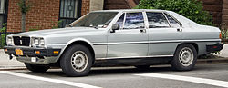
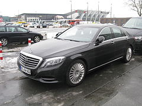
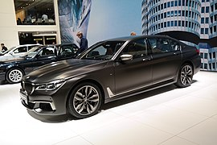
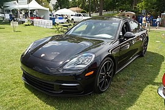
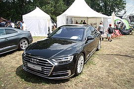
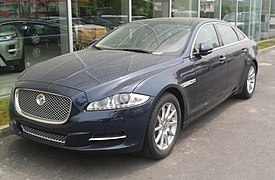

headder
F-клас
F-клас є найбільшим в європейській класифікації легкових автомобілів і завжди описується як "люкс-автомобіль". Еквівалентними категоріями є повнорозмірні люкс-автомобілі (full-size luxury sedan) у Сполучених Штатах та люкс-лімузини (luxury saloon) у Сполученому Королівстві.
Особливості
F-клас є нішевим на європейського ринку (приблизно 0,3%), а діапазон обмежений лише кількома моделями. Найбільше автомобілів F-класу випускається в кузові седан, але деякі випускались також і у кузові універсал. Варіанти з подовженою колісною базою для цих автомобілів є звичними, оскільки більшість з люксових функцій призначені для пасажирів на задньому сидінні. На деяких ринках (залежно від виробника) моделі з короткою колісною базою повністю виключаються, і продаються тільки варіанти з подовженою колісною базою. Ультра люкс-автомобілі також включені у F-клас.
Поточні моделі
У п'ятірку найбільш продаваних автомобілів F-класу в Європі входять Mercedes-Benz S-Class, BMW 7 Series, Porsche Panamera, Audi A8 та Jaguar XJ.
    

© Powered by Igor Khodachok 2020